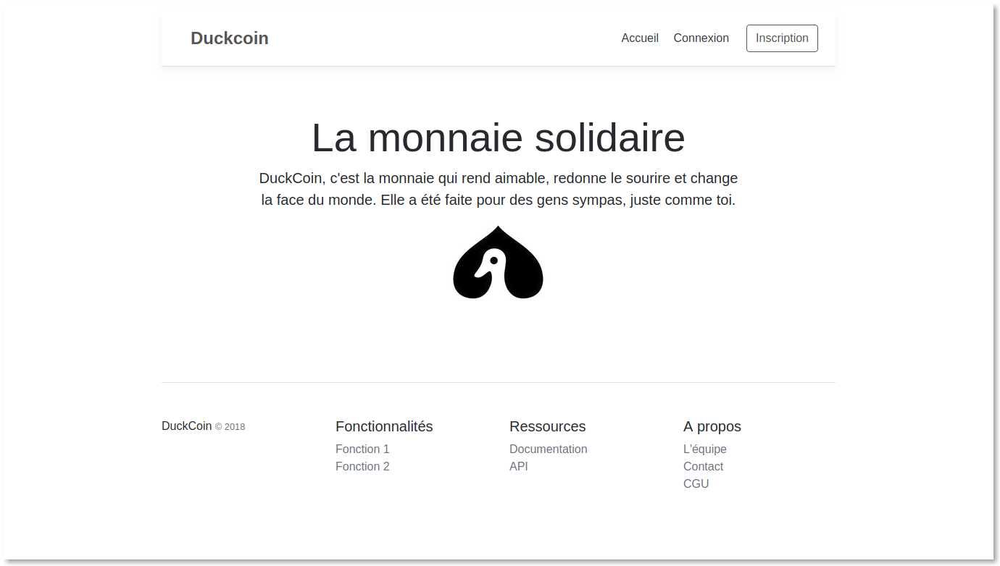
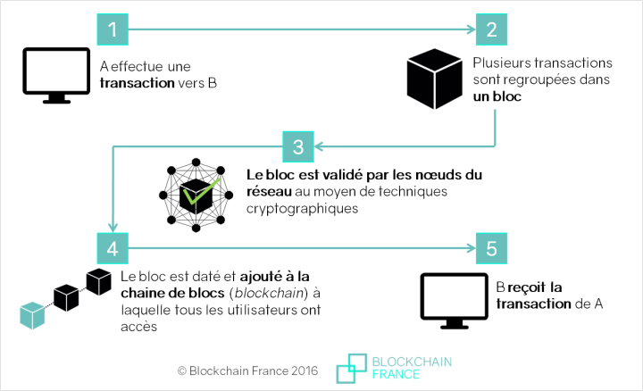
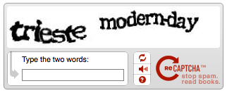
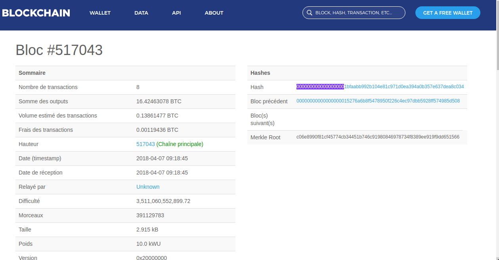

Chap 2 - Cas pratique : DuckCoin, la cryptomonnaie sur mobile
Explorer Ionic et son écosystème peut vite devenir très long, alors pour faire à peu près le tour du sujet, je vous propose dans ce livre de partir d'un projet concret qui va nous permettre d'aborder tous les concepts techniques dont vous aurez besoin pour lancer votre propre application mobile.
Après réflexion, et aimant surfer sur les tendances technologiques du moment, je vous propose d'explorer l'univers des cryptomonnaies en développant notre propre monnaie numérique, basé sur une blockchain du même et que nous appelerons DuckCoin, en hommage à la mascotte du département MMI de l'IUT de Troyes.
Un site internet a été créé pour l'occasion. Vous pourrez le visiter, vous inscrire et tester notre cryptomonnaie solidaire : https://duckcoin.charlesen.fr
C’est à la une de quasiment tous les journaux d’information. Par une seule semaine sans que l’on vous parle ci et là du Bitcoin, de Ripple ou d’une autre crypto-monnaie en vogue.
Une crypto-monnaie est selon Wikipédia :
Une monnaie virtuelle utilisable sur un réseau informatique décentralisé, de pair à pair
Dit autrement, c’est comme remplacer ses euros, ses dollars ou ses francs CFA par une devise stockée en ligne ou directement dans votre ordinateur ou clé usb. Bitcoin, la plus célèbre des crypto-monnaies et celle qui vaut le plus chère, a été lancé quelques temps seulement après la crise financière de 2008 : la fameuse crise des subprimes.
Quelques années plus tard, on dénombre plus de 1000 crypto-monnaies selon le site internet CoinMarketCap pour une capitalisation boursière (valeur au prix du marché de l’ensemble des crypto-monnaies en circulation) de plus de 740 milliards de dollars. C’est juste énorme et ce n’est rien comparé au potentiel de ce nouveau marché.
Principales crypto-monnaies
Bitcoin
Bitcoin est une devise virtuelle pair-à-pair décentralisée qui fonctionne grâce à ses utilisateurs, sans autorité centrale ni intermédiaire. Elle vaut à l’heure où j’écris ces quelques lignes autour de 6 616,51 dollars, soit environ 5 405,71 euros, soit plus de 3,5 millions de Franc CFA. C’est juste énorme.
1 Bitcoin = €5 405,71
Ripple
Ripple est un système de règlement brut en temps réel, un marché des changes et un réseau de transfert de fonds. Également appelé le Ripple Transaction Protocol ou Protocole Ripple, il est construit sur un protocole Internet distribué et open source, un registre de consensus et une monnaie native appelée XRP. Lancé en 2012, le réseau Ripple a pour objectif de permettre des transactions financières mondiales sécurisées, instantanées et presque gratuites, de toute taille sans rejets de débit.
Ripple et Bitcoin utilisent une méthode différente pour parvenir à un consensus réseau. Ripple utilise un processus de consensus itératif, tandis que Bitcoin utilise le « Proof of Work » (minage). Par conséquent, Ripple est plus rapide que Bitcoin. La finalisation des transactions ne prend que quelques secondes.
1 Ripple = €0,382906
Ethereum
Ethereum est une devise virtuelle développée sur une plateforme logicielle ouverte basée sur la technologie blockchain qui permet aux développeurs de créer et déployer des applications décentralisées qui exécutent des contrats intelligents (« smart contracts »). C’est fin 2013 que Vitalik Buterin, un chercheur et développeur en crypto-monnaie, propose Ethereum.
À l’instar de Bitcoin, Ethereum est un réseau de blockchain publique. Bien qu’il existe des différences techniques considérables entre les deux, la distinction la plus importante est que Bitcoin et Ethereum diffèrent considérablement en termes d’objectifs et de capacités.Tandis que la blockchain bitcoin est utilisée pour suivre la propriété d’une devise virtuelle (Bitcoins), la blockchain Ethereum se concentre sur l’exécution du code de programmation de toute application décentralisée.
1 Ethereum = €300,78
La Blockchain pour les nuls
Selon Wikipédia :
Une blockchain, ou chaîne de blocs, est une technologie de stockage et de transmission d'informations sans organe de contrôle. Techniquement, il s'agit d'une base de données distribuée dont les informations envoyées par les utilisateurs et les liens internes à la base sont vérifiés et groupés à intervalles de temps réguliers en blocs, l'ensemble étant sécurisé par cryptographie, et formant ainsi une chaîne
Une blockchain contient des données créées par différents utilisateurs dans le temps et chaque acteur ou noeud de la blockchain possède une copie de celle-ci.
Il existe différents types de blockchains : celles qui sont privés, c'est à dire qu'un nombre limité d'acteurs, choisi arbitrairement, a le droit d'agir sur la blockchain, et celles qui sont publiques et donc accessibles à tout le monde sans aucune restriction. Comme l'a dit le mathématicien Jean-Paul Delahaye, une blockchain publique comme celle de Bitcoin peut être assimilée à
un très grand cahier, que tout le monde peut lire librement et gratuitement, sur lequel tout le monde peut écrire, mais qui est impossible à effacer et indestructible.
Une image valant mieux qu'un discours, voici comment on pourrait représenter la technologie Blockchain de manière simple :


Source : Blockchain France
Les applications de la Blockchain sont multiples car elle permet d'éliminer les tiers de confiance habituels que sont les banques, les assurances, les notaires,...et même l'Etat.
Si l'euro a de la valeur aujourd'hui c'est d'abord parce que cette valeur nous la lui accordons et que les banques et les Etats européens veillent à ce que cela soit toujours le cas en limitant sa quantité et sa provenance (BCE), en punissant pénalement la création de fausses monnaies,...
Avec la blockchain, ces tiers de confiance peuvent s'en aller en paix, la confiance étant répartie entre les différents acteurs du réseau blockchain. Rien ne nous empêche alors de créer notre propre monnaie, la distribuer et de la valoriser auprès d'un large panel de développeurs d'applications mobiles enthousiastes. C'est ce que nous allons faire tout au long des chapitres avec la cryptomonnaie DuckCoin.
Duckcoin : principes de fonctionnement
DuckCoin sera comme nous l'avons déjà dit une crypto-monnaie basée sur une blockchain publique. L'application mobile que nous allons développer tout au long de ce livre portera le même nom.
De plus, la monnaie fonctionnera à peu près sur le même principe que le Bitcoin, en tout cas en ce qui concerne son architecture.
Ce livre n'étant pas consacré à la Blockchain et aux cryptomonnaies, vous n'êtes pas obligé de lire la suite de ce chapitre et pouvez directement passer à la suite. Mais si vous êtes un tant soit peu curieux, alors restez, vous ne serez pas dessus je pense.
Construction de la Blockchain
Pour développer la blockchain sur laquelle sera construite notre cryptomonnaie, nous allons utiliser le langage de programmation Python, qui est assez simple à maîtriser.
class Blockchain(object):
def __init__(self):
# Constructeur : on initialise ici la chaîne et la liste qui contiendra les transactions
self.chain = []
self.current_transactions = []
def new_block(self):
# Permet la création d'un nouveau block qui sera à la chaine de blocs
pass
def new_transaction(self):
# Ajoute une nouvelle transaction à la liste des transactions.
# Un bloc peut contenir plusieurs transactions, toutes les unes que les autres
pass
@staticmethod
def hash(block):
# Permet le hashage d'un Bloc
pass
@property
def last_block(self):
# Renvoie le dernier bloc de la chaine
pass
La classe Blockchain sera responsable de la gestion de la chaîne. Elle va stocker les transactions et pourra grâce à des méthodes ajouter de nouvelles transactions ou de nouveaux blocs à la chaîne.
Un Bloc possède un index, c'est à dire un numéro qui permet de le situer dans la chaîne, un système d'horodatage appelé timestamp1, une liste de transactions, une preuve de travail ou proof of work en anglais que nous abrégerons pow, un hash, c'est à dire une empreinte numérique rendant le bloc unique en son genre, le hash du bloc précédant (previous_hash). Prenons par exemple le premier bloc de notre blockchain. Il ressemble à ceci :
block = {
'index': 1,
'timestamp': 1506057130.100625,
'transactions': [
{
'sender': "2327147fe1f5426f9dd545de4b27ee00",
'recipient': "82dec7f5cdfa2934df3954a5c7c7da5df1f",
'amount': 30,
}
],
'proof': 952,
'hash': "e24db68eb0a30e26e83b2ac5b9e29e1b161e5c1fa7425e73043362938b9824",
'previous_hash': ""
}
Ici, le premier bloc ne possède pas de hash pour le bloc précédent (previous_hash), ce qui est normal. Par contre, les blocs suivants devront l'avoir obligatoirement. C'est d'ailleurs cela qui garantit en partie la fiabilité de la blockchain. En effet, si un seul bloc devait être falsifié (un utilisateur qui mentirait sur le montant total de ses avoirs en modifiant un bloc), c'est toute la chaîne qui deviendrait invalide.
A présent rentrons plus en détail sur le fonctionnement des méthodes de la classe BlockChain.
Gestions des transactions
La méthode new_transaction est en charge de l'ajout de nouvelles transactions au sein d'un bloc.
class Blockchain(object):
...
def new_transaction(self, sender, recipient, amount):
"""
Création d'une nouvelle transaction qui sera intégré au dernier bloc à inclure dans la blockchain
:param sender: <str> Adresse (hash) du destinateur
:param recipient: <str> Adresse (hash) du destinataire
:param amount: <int> Montant envoyé par le 'sender' au 'recipient'
:return: <int> index du bloc qui stockera cette transaction
"""
self.current_transactions.append({
'sender': sender,
'recipient': recipient,
'amount': amount,
})
return self.last_block['index'] + 1
Chaque fois qu'un utilisateur souhaitera envoyer de l'argent à un autre, c'est cette méthode qui sera appelée. Le tout (la transaction) sera stockée dans le prochain bloc à miner (notion que nous aborderons plus loin).
Gestion des blocs
A la création de la blockchain, nous allons devoir créer un bloc initial, qui stockera les toutes premières transactions de la blockchain. C'est à l'intérieur de ce bloc par exemple que l'on pourra stocker les transactions permettant d'envoyer de l'argent aux 20 premiers utilisateurs de notre cryptomonnaie. Et oui, avoir de l'argent en stock c'est bien, mais si personne ne s'en sert, elle n'a aucune valeur.
Ce bloc initial est appelé dans l'univers des cryptomonnaies, le bloc Genesis, pour genèse en français. Et avant la genèse, il n y a rien...en principe.
import json
from hashlib sha256
from time import time
class Blockchain(object):
def __init__(self):
self.current_transactions = []
self.chain = []
# Création du bloc initial genesis
self.new_block(previous_hash='', proof=100)
def new_block(self, proof, previous_hash=None):
"""
Création d'un nouveau bloc dans la Blockchain
:param proof: <int> valeur retourné l'algorithme de preuve de travail
:param previous_hash: (Optionel pour le premier bloc) <str> Hash du bloc préc.
:return: <dict> Nouveau Bloc
"""
block = {
'index': len(self.chain) + 1,
'timestamp': time(),
'transactions': self.current_transactions,
'proof': proof,
'previous_hash': previous_hash or self.hash(self.chain[-1]),
}
# Remise à zéro de la liste des transactions
self.current_transactions = []
self.chain.append(block)
return block
def new_transaction(self, sender, recipient, amount):
"""
Création d'une nouvelle transaction qui sera intégré au dernier bloc à inclure dans la blockchain
:param sender: <str> Adresse (hash) du destinateur
:param recipient: <str> Adresse (hash) du destinataire
:param amount: <int> Montant envoyé par le 'sender' au 'recipient'
:return: <int> index du bloc qui stockera cette transaction
"""
self.current_transactions.append({
'sender': sender,
'recipient': recipient,
'amount': amount,
})
return self.last_block['index'] + 1
@property
def last_block(self):
return self.chain[-1]
@staticmethod
def hash(block):
"""
Création d'un hash du bloc avec la fonction de hashage SHA-256
:param block: <dict> Block
:return: <str>
"""
# On ordonne le bloc avant de le sérialiser
block_string = json.dumps(block, sort_keys=True).encode()
return sha256(block_string).hexdigest()
La Preuve de travail, Proof of Work (pow)
La preuve de travail est la méthode qui permet de créer ou miner un nouveau bloc de la blockchain. Il s'agit d'un algorithm permettant, comme le rappel Wikipédia :
de dissuader, sur un réseau informatique, des attaques par déni de service et autres abus de service tels que le spam en requérant de la puissance de calcul et de traitement par ordinateur au demandeur de service. C'est un système difficile à produire car il est coûteux en temps et en énergie.
Lorsqu'un utilisateur effectue une transaction, celle-ci est, comme on l'a vu, stockée dans un bloc. Une fois que le bloc possède un certain nombre de transactions, il devra être intégré à la blockchain pour sauvegarde. C'est à ce moment là qu'intervient le minage par preuve de travail. Chaque noeud (ordinateur) va recevoir le bloc souhaitant intégrer la chaine et effectuer un certain nombre de calculs suffisament longs pour dissuader un noeud pirate. Et plus la chaine est longue comme celle de Bitcoin et d'autres cryptomonnaies, et plus le calcul est énegivore et décourageante pour le noeud pirate.
Le noeud ayant réussi en premier à résoudre l'énigme se voit recompenser d'une somme en crypto. Bitcoin recompense par exemple ses mineurs à hauteur de 25 BTC (à l'heure actuelle).
Une caractéristique de la pow est l'asymétrie du coût de calcul : le travail doit être difficilement réalisable pour le demandeur, mais facilement vérifiable pour un tiers.
Prenons par exemple une preuve de travail bien connu, le Captcha, que l'on retrouve sur de nombreux sites internet.

Si pour un humain, saisir ces informations est déjà assez difficile, imaginez ce qu'éprouvera un robot spammeur.
Pour en savoir plus, n'hésitez pas à lire le bel article de Cryptoencyclopedie : https://www.cryptoencyclopedie.com/single-post/Quest-ce-que-le-consensus-Proof-of-Work-
Pour notre algorithme de preuve de travail, choisissons arbitrairement que le hash d'un entier X, multiplié par un autre entier Y devra absolument se commencer par 3 chiffres 0. On aurait ceci par exemple :
hash(x * y) = 000ecad23dc...
Cela donnerait le code suivant :
import json
from hashlib import sha256
from time import time
from uuid import uuid4
class Blockchain(object):
...
def proof_of_work(self, last_proof):
"""
Un algorithme de Preuve de travail :
- Trouver un nombre x tel que hash(xy) commence par 3 zeros
- x étant la preuve précendente (last_proof)
- y étant une valeur que l'on incrémentera en partant de zero et qui
à la fin du calcul deviendra la nouvelle preuve (proof)
:param last_proof: <int>
:return: <int>
"""
proof = 0
while not self.valid_proof(last_proof, proof):
proof += 1
return proof
@staticmethod
def valid_proof(last_proof, proof):
"""
Validation du résulat de la preuve de travail : est-ce que hash(last_proof, proof)
commence bien par 3 zeros ?
:param last_proof: <int> Preuve précédente
:param proof: <int> Preuve actuelle
:return: <bool>
"""
proof_hash = sha256(str(last_proof*proof)).hexdigest()
return proof_hash[:3] == "000"
On aurait pu compliquer le calcul en testant un nombre de zéros beaucoup plus grand, mais l'on se contentera de 3 zéros. Si vous passer de 3 à 4, le même calcul avec les mêmes valeurs en entrée est largement plus long. Donc on imagine bien que plus l'on augmente le nombre de zéros, et plus les choses se compliquent.
Un test avec une valeur de x=2018, permet d'avoir un résultat en 0.07s environ
import time
x = 2018 # Dernière preuve
y = 0 # Valeur que l'on incrémentera jusqu'à trouver le bon résultat
debut = time.time()
while not valid_proof(x,y):
y += 1
print y
fin = time.time()
duree = fin-debut
# Hash trouvé : 000e7ea9705df1fe65fe077d5054fe4a12aa6bbe074d5060ed9f0b251e16d0f9
# La solution est y = 566 au bout de 0.0716059207916 s
Le meme test prend plus de 6s pour un nombre de zéros égal à 4.
Pour rappel, la preuve de travail du Bitcoin, qui ressemble à peu près à celle que l'on a implementé, utilise un nombre de zéros égal à 18 (voir image ci-dessous). C'est quand même énorme !

Interaction avec la Blockchain DuckCoin
Pour l'affichage et les interactions avec la blockchain, nous utiliserons un framework Python nommé Flask, robuste et très simple à prendre en main. Si vous souhaitez en savoir plus sur Flask, n'hésitez pas à lire l'excellente documentation en ligne : http://flask.pocoo.org/
Notre cryptomonnaie qui est disponible à l'adresse : https://duckcoin.charlesen.fr/ peut être exploitée via les actions suivantes :
| Action | Description |
|---|---|
| /transactions/new | Permet d'ajouter une nouvelle transaction |
| /mine | Minage d'un nouveau bloc |
| /chain | Retourne la blockchain complète |
Maintenant que notre outil est en place, nous pouvons seirenement nous lancer dans la création de l'application mobile qui nous permettra d'interagir avec la Blockchain, gérer notre portefeuille, envoyer ou recevoir de l'argent sous forme de tokens DCK.
1. Le timestamp (unix) désigne le nombre de secondes écoulées depuis le 1er janvier 1970 à minuit UTC précise ↩